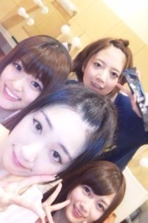
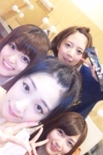

2012/0815Wed（´-`）.｡oO(かずみん×88
こんばんは( ´ ▽ ` )ﾉ
いつも応援ありがとう
こざいます！
コメント、すべて読ませて
もらいました。
沢山の温かい言葉、
どうもありがとう。
ライブの感想とか
ポジティブSAY!とかも
ありがとうございます(*^_^*)
みなさん大好きです(>v<)
まいまいブログ、ありがとう(T_T)
ケータイ、なんとか治りました！
ただショップにも行く暇がなくて
いつまた壊れるかわからないので
その時はみなさん待っててね(T ^ T)
そして、まいまいファンのみなさん！
私の携帯が戻ったと同時に、
まいまいがバスに携帯を
忘れてしまいました(>_<)
バス会社から送られてくるまで
ブログが更新できないそうなので、
ちょっと待ってて下さいね(´･_･`)
-----
昨日はZEPP名古屋で
ライブでした(^^)
来てくださったみなさん、
ありがとうございました\(//∇//)\

とっても楽しかった！
大阪での反省を生かせたので
よかったです(*^^*)
初めてのライブって
色々自分で納得いかない所もあった
けれど、その分自分への課題も
見つかったので、
とても為になりました！
来れなかった方からの頑張れ
エールもしっかり届いてましたよ(^^)
みなさんのおかげで成功しました！
本当にありがとうございました！
そして東京公演も決定しましたね！
私も昨日知って、
びっくりしました(>_<)
まだ何にもレッスンしてないよΣ（・□・；
大丈夫かなぁ...
不安も大きいですが、
東京、渋谷パルコ劇場でできると
いうこと、とても嬉しいです。
まだ詳細は決まってませんが、
東京公演に向けてガジ頑張りますので
みなさん楽しみにして
待ってて下さい！
ぜひ来てくださいね(#^.^#)
---
...最近髪が伸びて来て
ポニーにしようか、切ろうか
伸ばそうか...
悩んでます(´･_･`)
今の所伸ばす方向性です。笑
ロングにしたいな〜！
みなさんはどの高山が
好きですか（´-`）？
------
明日は取材day!
楽しみです(*^_^*)
今日も取材でした！楽しかった^^
一日お疲れ様でした！
自分へのご褒美に
夕飯はちょっと贅沢に
ゴマ豆腐買っちゃいました♪
それでは、みなさん
おやすみなさい...☆
いつも応援ありがとう
こざいます！
コメント、すべて読ませて
もらいました。
沢山の温かい言葉、
どうもありがとう。
ライブの感想とか
ポジティブSAY!とかも
ありがとうございます(*^_^*)
みなさん大好きです(>v<)
まいまいブログ、ありがとう(T_T)
ケータイ、なんとか治りました！
ただショップにも行く暇がなくて
いつまた壊れるかわからないので
その時はみなさん待っててね(T ^ T)
そして、まいまいファンのみなさん！
私の携帯が戻ったと同時に、
まいまいがバスに携帯を
忘れてしまいました(>_<)
バス会社から送られてくるまで
ブログが更新できないそうなので、
ちょっと待ってて下さいね(´･_･`)
-----
昨日はZEPP名古屋で
ライブでした(^^)
来てくださったみなさん、
ありがとうございました\(//∇//)\

とっても楽しかった！
大阪での反省を生かせたので
よかったです(*^^*)
初めてのライブって
色々自分で納得いかない所もあった
けれど、その分自分への課題も
見つかったので、
とても為になりました！
来れなかった方からの頑張れ
エールもしっかり届いてましたよ(^^)
みなさんのおかげで成功しました！
本当にありがとうございました！
そして東京公演も決定しましたね！
私も昨日知って、
びっくりしました(>_<)
まだ何にもレッスンしてないよΣ（・□・；
大丈夫かなぁ...
不安も大きいですが、
東京、渋谷パルコ劇場でできると
いうこと、とても嬉しいです。
まだ詳細は決まってませんが、
東京公演に向けてガジ頑張りますので
みなさん楽しみにして
待ってて下さい！
ぜひ来てくださいね(#^.^#)
---
...最近髪が伸びて来て
ポニーにしようか、切ろうか
伸ばそうか...
悩んでます(´･_･`)
今の所伸ばす方向性です。笑
ロングにしたいな〜！
みなさんはどの高山が
好きですか（´-`）？
------
明日は取材day!
楽しみです(*^_^*)
今日も取材でした！楽しかった^^
一日お疲れ様でした！
自分へのご褒美に
夕飯はちょっと贅沢に
ゴマ豆腐買っちゃいました♪
それでは、みなさん
おやすみなさい...☆
2012/08/15 22:54
コメント(438)
満面の笑みがいいな！
ライブお疲れさま！！
観に行きたかったよー。。。
東京公演は絶対観に行くね！！！
個人的にはロングがいいと思う！！！
髪伸びたね！
ポニーテールいいと思います( ´ ▽ ` )ﾉ
いろいろ試してみてください！
ブログ刑事面白かった！
大阪名古屋東京以外でもLIVEや握手会を開催してほしいな！
かずみんはセミロングが好き！
あっ昨日のサッカーのイベントでなんでキーパーしてたの！？
大阪名古屋東京以外でもLIVEや握手会を開催してほしいな！
かずみんはセミロングが好き！
あっ昨日のサッカーのイベントでなんでキーパーしてたの！？
かずみん！
ライブお疲れ!!
今回は行けなかったけど、東京公演はぜひ行きたいな(oﾟ▽ﾟ)o
てか行く(笑)
どんどん成長していく乃木坂をこれからも応援していくのでよろしくね☆
髪はね～、今ぐらいが１番好きかな(´▽｀)
ツインもちょっと見てみたいかも。
ではでは、今日もお互いガジ頑張りましょ！
ライブお疲れ!!
今回は行けなかったけど、東京公演はぜひ行きたいな(oﾟ▽ﾟ)o
てか行く(笑)
どんどん成長していく乃木坂をこれからも応援していくのでよろしくね☆
髪はね～、今ぐらいが１番好きかな(´▽｀)
ツインもちょっと見てみたいかも。
ではでは、今日もお互いガジ頑張りましょ！
おはよー！
名古屋ライブ最高でした！
その場にいれたことが、本当に嬉しかった！東京公演も当選するといいな！
今回のブログの写真のかずみんも前髪アップのかずみんも、どの高山も大好きです！！！
ではまた！
名古屋ライブ最高でした！
その場にいれたことが、本当に嬉しかった！東京公演も当選するといいな！
今回のブログの写真のかずみんも前髪アップのかずみんも、どの高山も大好きです！！！
ではまた！
はじめまして、しげです。
写メのかずみさんめっちゃかわいい。違った顔。髪が長いかずみさんが俺はいいと思います!!
写メのかずみさんめっちゃかわいい。違った顔。髪が長いかずみさんが俺はいいと思います!!
携帯直ったんだw
2日間ライブお疲れ様！
今回両方とも行けてほんと楽しかったよ！
1日目は場所が悪くてあんまりかずみん見えなかったけど、2日目はかずみんがよく来る側で見てたから思わすかずみんコールたくさんしてしまったよw(ﾟДﾟ)
東京公演も行けたら行きたいなぁ…(´∀｀)
髪ロングにするの！？
前ブログに載せてたロングの写真も可愛かったしねー！
2日間ライブお疲れ様！
今回両方とも行けてほんと楽しかったよ！
1日目は場所が悪くてあんまりかずみん見えなかったけど、2日目はかずみんがよく来る側で見てたから思わすかずみんコールたくさんしてしまったよw(ﾟДﾟ)
東京公演も行けたら行きたいなぁ…(´∀｀)
髪ロングにするの！？
前ブログに載せてたロングの写真も可愛かったしねー！
ライブお疲れさま(^O^)
ポニテ希望|(￣3￣)|
ポニテ希望|(￣3￣)|
ポジティブSAY！！！
zepp2日間お疲れ様でした!
名古屋行きました*・ω・*
お母さんと一緒に行ったんですが
お母さんもすごく楽しかったって
言ってました！「あの前髪あげてる子かずみんでしょ？可愛い」
って言ってて私が嬉しくなってしまいました(笑)
そして私もかずみんが頑張って歌って踊ってるのを
見て前向きにポジティブに頑張ろうと思えました！
そして最高の誕生日イブになりました♪
東京公演決定おめでとうございます！
乃木坂46がどんどん成長してるんだな
と思うとすごく嬉しいです
もっともっとこれから大変になるかもしれないけど
私はずっと応援してるのでガジ頑張ってください！
ロングも似合うと思います!!!
かずみんのポニーテールが一番好きです！←
この写真の感じいいですよ！！！←
名古屋行きました*・ω・*
お母さんと一緒に行ったんですが
お母さんもすごく楽しかったって
言ってました！「あの前髪あげてる子かずみんでしょ？可愛い」
って言ってて私が嬉しくなってしまいました(笑)
そして私もかずみんが頑張って歌って踊ってるのを
見て前向きにポジティブに頑張ろうと思えました！
そして最高の誕生日イブになりました♪
東京公演決定おめでとうございます！
乃木坂46がどんどん成長してるんだな
と思うとすごく嬉しいです
もっともっとこれから大変になるかもしれないけど
私はずっと応援してるのでガジ頑張ってください！
ロングも似合うと思います!!!
かずみんのポニーテールが一番好きです！←
この写真の感じいいですよ！！！←
ライブの成功おめでとう
いけなかったけど、本当に嬉しい
２１日のめざましライブ行くよ
楽しみにしてるね
パルコ劇場のライブでは
偶然を言い訳にして
やってほしいなあ
髪の毛はのばしたほうが
断然 いいね
いけなかったけど、本当に嬉しい
２１日のめざましライブ行くよ
楽しみにしてるね
パルコ劇場のライブでは
偶然を言い訳にして
やってほしいなあ
髪の毛はのばしたほうが
断然 いいね
おはよう！かずみん
ZEPP名古屋すごい楽しかったですよ！
東京から遠征してよかった・・・ホント思い出に残りましたよ！
かずみんのオデコ出しもチャーミングでナイスですぜ
メンバー紹介のマイクアシストも中々上々の出来でした
なにより単独初ライブに立ち会えた喜びが大きいですね！
東京公演、ガジ頑張りましょう！！
それではまたお会い出来る日まで・・・ポジティブSAY（笑）
ZEPP名古屋すごい楽しかったですよ！
東京から遠征してよかった・・・ホント思い出に残りましたよ！
かずみんのオデコ出しもチャーミングでナイスですぜ
メンバー紹介のマイクアシストも中々上々の出来でした
なにより単独初ライブに立ち会えた喜びが大きいですね！
東京公演、ガジ頑張りましょう！！
それではまたお会い出来る日まで・・・ポジティブSAY（笑）
おはかずみん♪
名古屋行ったよ～(^_−)−☆
ガジよかったわー(*´∀`)ノ
デコだしポニテめちゃんこかわゆすやった！
ロングか～ショートも見てみたいしな～
まぁどのかずみんもかわいーから大丈夫さ！
頑張れかずみん！
東京公演当たるかな…
じゃあ！！
名古屋行ったよ～(^_−)−☆
ガジよかったわー(*´∀`)ノ
デコだしポニテめちゃんこかわゆすやった！
ロングか～ショートも見てみたいしな～
まぁどのかずみんもかわいーから大丈夫さ！
頑張れかずみん！
東京公演当たるかな…
じゃあ！！
お疲れ様です
かずみん…髪伸ばすんですか？
いろんなかずみんを見てみたい…
最近、乃木坂46大活躍ですね
女子サッカーの応援イベントでゴールキーパーになっていましたね …似合っていると思います
…似合っていると思います
東京公演も決定したようで更に忙しくなると思いますが
体に気をつけて頑張ってください（東京公演行きたいけど抽選当たるかな？）
応援しています
かずみん…髪伸ばすんですか？
いろんなかずみんを見てみたい…
最近、乃木坂46大活躍ですね
女子サッカーの応援イベントでゴールキーパーになっていましたね
東京公演も決定したようで更に忙しくなると思いますが
体に気をつけて頑張ってください（東京公演行きたいけど抽選当たるかな？）
応援しています
おはようございます はしも～です
はしも～です
2日間ライブお疲れ様でした
初遠征で大阪・名古屋参加しました
しっかりとした、ライブを見るのは初めてだったのでとても幸せな2日間でした
初めてのライブが乃木坂でよかったです
名古屋での、かずみさんのデコだしは可愛すぎました
東京公演も楽しみにしてます
俺はどのかずみんも好きですよ
ではでは
2日間ライブお疲れ様でした
初遠征で大阪・名古屋参加しました
しっかりとした、ライブを見るのは初めてだったのでとても幸せな2日間でした
初めてのライブが乃木坂でよかったです
名古屋での、かずみさんのデコだしは可愛すぎました
東京公演も楽しみにしてます
俺はどのかずみんも好きですよ
ではでは
ライブお疲れ様！
名古屋まで観に行ったよ！！
ステージ上のかずみん、凄い楽しそうで輝いてたよ
やっぱりライブはいいね！
MCの時のマイクの高さを調節するかずみんがツボでした笑
東京公演決定おめでとう！
ミュージカルって出たけど、どんな風になるのか凄い楽しみだな。
レッスンとか大変だと思うけど、体調に気を付けて頑張ってね！
DS忘れるゆみ姉だったり、携帯忘れるまいまいだったり乃木坂の年長2人大丈夫か？笑
名古屋まで観に行ったよ！！
ステージ上のかずみん、凄い楽しそうで輝いてたよ
やっぱりライブはいいね！
MCの時のマイクの高さを調節するかずみんがツボでした笑
東京公演決定おめでとう！
ミュージカルって出たけど、どんな風になるのか凄い楽しみだな。
レッスンとか大変だと思うけど、体調に気を付けて頑張ってね！
DS忘れるゆみ姉だったり、携帯忘れるまいまいだったり乃木坂の年長2人大丈夫か？笑
結構早く直ったんだね(・ω・)
てか、まいまい(笑)
まあそんな時もあるさ＼(^o^)／
え、このゆるふわみたいなの一実なの？ｗ
この美人さん誰かと思ったはああああ
とりあえずライブお疲れさま
楽しかったぜぜぜぜぜーいっ！
てか、まいまい(笑)
まあそんな時もあるさ＼(^o^)／
え、このゆるふわみたいなの一実なの？ｗ
この美人さん誰かと思ったはああああ
とりあえずライブお疲れさま
楽しかったぜぜぜぜぜーいっ！
かずみん こんにちは(｀_´)ゞ
更新待ってたよぉ( ´ ▽ ` )ﾉ
ケータイ無事直ったんやね♪
よかったよかった♪(´ε｀ )
と思ったら今度は まいまい が(´;ω;`)
でもうっかりしてるとこが まいまい らしいよね（笑
今度は まいまい の更新を楽しみに待ってようo(^▽^)o
名古屋LIVEお疲れ様ぁ
いろいろ課題も見つかったみたいだけど
とにかく楽しめたみたいでよかったね(((o(*ﾟ▽ﾟ*)o)))
そして今度は東京公演！
まずは決定おめでとぉ＼(^o^)／
レッスンとか忙しいと思うし不安もあるだろうけど
応援しとんよ！
ガジがんばってね！！
髪切るか伸ばすか悩んでるの？
ロングかずみん 見てみたいなぁ\(//∇//)\
でも個人的にはポニーテールの かずみん 好き(*≧∇≦*)
いろんな かずみん 見てみたい(^O^)／
取材がんばってね！
小６のまいぼんです★
ライブ行きたかったけど、宿題が多くて、行けなかった(´；ω；｀)
かずみん、髪、伸ばして！
絶対かわいい(o>ω<o)
ライブ行きたかったけど、宿題が多くて、行けなかった(´；ω；｀)
かずみん、髪、伸ばして！
絶対かわいい(o>ω<o)
ポジティブSAY!!!
ええっと
まず...
二日間お疲れさま♪
大阪も名古屋も両方最高やったで↑↑
沸いた沸いたｗ
また東京公演も行けたら見に行きます！
ゴマ豆腐ってなんか弾力性が強い変わった味の豆腐でしょ？
しってるよ？
ええっと
まず...
二日間お疲れさま♪
大阪も名古屋も両方最高やったで↑↑
沸いた沸いたｗ
また東京公演も行けたら見に行きます！
ゴマ豆腐ってなんか弾力性が強い変わった味の豆腐でしょ？
しってるよ？
かずみさん、おはよう☆
初ライブお疲れ様でした。
色々ありましたが、とりあえず無事に終わって良かったですね。
初ライブ参加したかったですが、なんせ遠方の為ちょっと難しかったです(-_-;)
ですがサプライズで東京公演きましたねぇ～♪
行きたいな。チケットさえ獲れればいきますよ。もう最近は目覚ましライブもすぐ売り切れですし人気上昇中です。
髪型はロングが良いかな。ポニテも素敵でしたし最後の写メも綺麗です。
まだまだ暑い日が続きますが、かずみさんも体調に気をつけて過ごしてくださいね☆
初ライブお疲れ様でした。
色々ありましたが、とりあえず無事に終わって良かったですね。
初ライブ参加したかったですが、なんせ遠方の為ちょっと難しかったです(-_-;)
ですがサプライズで東京公演きましたねぇ～♪
行きたいな。チケットさえ獲れればいきますよ。もう最近は目覚ましライブもすぐ売り切れですし人気上昇中です。
髪型はロングが良いかな。ポニテも素敵でしたし最後の写メも綺麗です。
まだまだ暑い日が続きますが、かずみさんも体調に気をつけて過ごしてくださいね☆
ケータイ、すぐなおってよかったね(^-^)また更新してくれてありがとう(^o^)
ライブは行ってないけど、次のライブではグレードアップしたかずみんが見れると思うので、ガジ楽しみ(*''*)
渋谷パルコ劇場ってめっちゃ近いー(≧∇≦)どうしても行きたいな(^^)
かずみんのポニー好きだよ(///∇///)ロング見たい！
ゴマ豆腐美味しいよねー(^q^)
あ、ゴールキーパーのユニフォームを着たかずみん見たよ♪かわいかった(*^^*)画像で見ただけだから生で見たかったな(>_<)
ライブは行ってないけど、次のライブではグレードアップしたかずみんが見れると思うので、ガジ楽しみ(*''*)
渋谷パルコ劇場ってめっちゃ近いー(≧∇≦)どうしても行きたいな(^^)
かずみんのポニー好きだよ(///∇///)ロング見たい！
ゴマ豆腐美味しいよねー(^q^)
あ、ゴールキーパーのユニフォームを着たかずみん見たよ♪かわいかった(*^^*)画像で見ただけだから生で見たかったな(>_<)
かずみーん☆
ポジティブSay♪
名古屋のライブどえらい楽しかったよ(*^_^*)
前髪上げてたの超可愛いかったよ(///ω///)♪
握手会でも是非やってね！
髪型か～、うーん、どのかずみんも好きだけど、やっぱり伸ばして欲しいな(*^^*)
愛知のともくん
ポジティブSay♪
名古屋のライブどえらい楽しかったよ(*^_^*)
前髪上げてたの超可愛いかったよ(///ω///)♪
握手会でも是非やってね！
髪型か～、うーん、どのかずみんも好きだけど、やっぱり伸ばして欲しいな(*^^*)
愛知のともくん
かずみんおはよう！
ライブ２日間お疲れさまでした。
名古屋も盛り上がったみたいでよかった！
チケットさえあれば(>_<)
かずみん髪のびたね。
ロングのかずみんに１票！伸ばす方向性に賛成！
ライブ２日間お疲れさまでした。
名古屋も盛り上がったみたいでよかった！
チケットさえあれば(>_<)
かずみん髪のびたね。
ロングのかずみんに１票！伸ばす方向性に賛成！
かずみんおはよう
ブログ更新ありがとう♪
携帯壊れたって聞いたから
しばらく更新はないのかなって
思ってたから……(>_<)
実はね
「偶然を言い訳にして」にしてを昨日、聴いてたんだけど……
やっぱこの４人のメンバーって
最高だなぁって思っててね
ぜひ、ユニットを組んで欲しいなぁなんて思ってたんだ(*^^*)
ただの理想だけど
叶ったら嬉しいな(^з^)-☆
髪型のことだけど
オレはロングのかずみんが見たいなぁ＼(^o^)／
でも、かずみんのポニーテールも可愛いし……
悩みどころです(笑)
今日も一日頑張ろう!!
ポジティブsay!!
ライブお疲れさまでした(^_^)
東京公演も成功するように頑張ってね☆
かずみんはロングがいいと思いますよ！！
ポジティブSAY!
東京公演も成功するように頑張ってね☆
かずみんはロングがいいと思いますよ！！
ポジティブSAY!
お疲れ様!!
東京やったー!!!!!!
待ってました(笑)
絶対行きます(^^)/
ポニーがいいな～☆
ポニーテール好きなんで(笑)
まぁどんなかずみんでも好きだぜぇ～(^-^)笑
東京やったー!!!!!!
待ってました(笑)
絶対行きます(^^)/
ポニーがいいな～☆
ポニーテール好きなんで(笑)
まぁどんなかずみんでも好きだぜぇ～(^-^)笑
名古屋お疲れ様(*^o^*)
東京おめでとう(≧∇≦)↑
参加出来るように頑張ります(o^∀^o)
髪迷うよね！写真のかずみんかわいいから長いのも悪くないよ(笑)
東京おめでとう(≧∇≦)↑
参加出来るように頑張ります(o^∀^o)
髪迷うよね！写真のかずみんかわいいから長いのも悪くないよ(笑)
♪♪かずみん♪♪
おはよう=^・^=
改めて、大阪、名古屋での初ライブおめでとう!!
無事終了してよかったです(*^^*)
携帯も復活？もっとブログ更新に時間がかかると思ってたので嬉しいです(^^)
ーーーーチョキチョキーーーー
かずみんの髪型はポニーテールが大好きです♪
なぜ？って可愛いからね♪後ロングも見て見たいな！やっぱり女性らしいもんね♪
でも、この暑さ続きだと、ショートのほうが過ごしやすいのかな？(*^^*)
ーーーーチョキチョキーーーー
Uー20女子サッカーの運営ブログ見ました。かずみんはキーパー!?かっこいい!!
ーーーーチョキチョキーーーー
写メ1枚目！ガジができた時と同じ髪型やp(^^)q
ガジがんばってんね(^^)d
写メ2枚目！
いつもと違った感じ、いい感じ！やっぱりかずみんは美人だなと思った。
かずみんは、性格がよくてその上、可愛いくて美人だよ。
※自分へのご褒美≪ゴマ豆腐≫(*^^*)
かずみんらしくてほっこりしました♪
かずみさん♪
またコメします。
またね(*・ｘ・)ノ~~~♪
おはよう=^・^=
改めて、大阪、名古屋での初ライブおめでとう!!
無事終了してよかったです(*^^*)
携帯も復活？もっとブログ更新に時間がかかると思ってたので嬉しいです(^^)
ーーーーチョキチョキーーーー
かずみんの髪型はポニーテールが大好きです♪
なぜ？って可愛いからね♪後ロングも見て見たいな！やっぱり女性らしいもんね♪
でも、この暑さ続きだと、ショートのほうが過ごしやすいのかな？(*^^*)
ーーーーチョキチョキーーーー
Uー20女子サッカーの運営ブログ見ました。かずみんはキーパー!?かっこいい!!
ーーーーチョキチョキーーーー
写メ1枚目！ガジができた時と同じ髪型やp(^^)q
ガジがんばってんね(^^)d
写メ2枚目！
いつもと違った感じ、いい感じ！やっぱりかずみんは美人だなと思った。
かずみんは、性格がよくてその上、可愛いくて美人だよ。
※自分へのご褒美≪ゴマ豆腐≫(*^^*)
かずみんらしくてほっこりしました♪
かずみさん♪
またコメします。
またね(*・ｘ・)ノ~~~♪
ひろきやで！
名古屋ライブお疲れ様(^^)
名古屋行きたかったー(泣)
俺も東京公演やるの知ってびっくりした(笑)
かずみんやったら、絶対成功するって信じてるで(^^)b
かずみどの髪型も好きやけど、やっぱポニーテールよりも、くくって無 ストレートが一番好きかな(笑)
ストレートが一番好きかな(笑)
名古屋ライブお疲れ様(^^)
名古屋行きたかったー(泣)
俺も東京公演やるの知ってびっくりした(笑)
かずみんやったら、絶対成功するって信じてるで(^^)b
かずみどの髪型も好きやけど、やっぱポニーテールよりも、くくって無
かずみん、高山一実familyの皆様おはようございます！かずみん推しビギナーのピグレットです。
今87にコメントしたら88が… 携帯直って良かった～ 自分へのご褒美がゴマ豆腐って言ってるかずみんが、心の底から大好きだよ。
君に出会って、君の推しになってfamilyの端に加えて貰えてホントに良かった。これからも出来る応援はして行きます!!
かずみんも健康には注意してね。
ヘァーの件は自分は断然ロングが似合うと思います。ぜひロングにして下さい。
って言ってるけどどのかずみんも好きです!!
今87にコメントしたら88が… 携帯直って良かった～ 自分へのご褒美がゴマ豆腐って言ってるかずみんが、心の底から大好きだよ。
君に出会って、君の推しになってfamilyの端に加えて貰えてホントに良かった。これからも出来る応援はして行きます!!
かずみんも健康には注意してね。
ヘァーの件は自分は断然ロングが似合うと思います。ぜひロングにして下さい。
って言ってるけどどのかずみんも好きです!!
かずみ～ん
ライブおつかれさま♪
うーん
どのかずみんが好きやろ？？？
とりあえずもちもち系かずみんは大好き!!
うん。
ガジ大好き(笑)
まいまいww
乃木坂メン携帯忘れる人多くね？(笑)
まあ、それだけみんな疲れちょんのやろうな(^^;
みんなおつかれさま!!
ポジティブsayで疲れなんて吹っ飛ばしていこ～
あと少しで握手会(*^^*)
福岡のミニ個別は二部までしかおれんかったけんな、、、
今度は五部まで行くけん!!
かずみんにガジ会いたい(>_<)
んじゃね
ばいばーい
大分のりゅーせーより//
どっちもスキだけど、
ショートのほうが好みかも!!
かずみん可愛いー(´∀｀)
ショートのほうが好みかも!!
かずみん可愛いー(´∀｀)
かずみーん！
２日間お疲れ様！
難波しか行けてないけど
かずみんしかみてませんでしたw
今度は大阪個別やね！
たのしみです(^q^)
今日でお盆もおわり。
明日から僕もしごとがんばりますw
２日間お疲れ様！
難波しか行けてないけど
かずみんしかみてませんでしたw
今度は大阪個別やね！
たのしみです(^q^)
今日でお盆もおわり。
明日から僕もしごとがんばりますw
ポニーがいいです♪ポジティブＳＡＹ！！
ＺＥＰＰ名古屋行きたかったです
ＺＥＰＰ名古屋行きたかったです
かずみぃぃぃぃぃぃいいいいいいん(_≧Д≦)ﾉ彡☆♪
しばらく直らないみたいな感じだったから心配したけど携帯直ってよかった！！
また壊れるかもってことはソフトかな？
バックアップとって復元すれば大抵のことは直ると思うよ。
iPhoneだとショップでは対応してくれないしりんごさんサポートはすごいお金かかるから自力で直せそうなら自力で直したほうがいいよ！
俺んとこ来てくれれば一瞬で直すのに（笑）
まいまい......なんでやー（笑）
とりまライブお疲れ様^^
行きたかったな～
東京公演は行きたいな 楽しみにしてるよーー！！
まだ香港なーーう
今日はバドショップ探します（笑）
なんか全然香港らしくないんだけどかずみんのお土産見つけたから買ってくね～＼(￣∀￣*)/
ん～、どのかずみんも好きだけど～
なんか写メみてたら案外ロングがいいよね
巻き髪？ウェーブ？
名前わからんけどw ほんわかしてる感じが最高や(｡≧ω≦)ﾉ
まぁ個人的にはポニーテールかな♪
でもショートはいつでも出来るからおれも伸ばして色んな髪にする方がいいと思うよ！
かずみん大好き～
忙しいと免疫減りがちだけど、お肌とかにも体調にも気をつけて頑張って(*≧ω≦*)
応援してるよ
☆☆☆(なお・ω・やん)☆☆☆
しばらく直らないみたいな感じだったから心配したけど携帯直ってよかった！！
また壊れるかもってことはソフトかな？
バックアップとって復元すれば大抵のことは直ると思うよ。
iPhoneだとショップでは対応してくれないしりんごさんサポートはすごいお金かかるから自力で直せそうなら自力で直したほうがいいよ！
俺んとこ来てくれれば一瞬で直すのに（笑）
まいまい......なんでやー（笑）
とりまライブお疲れ様^^
行きたかったな～
東京公演は行きたいな
まだ香港なーーう
今日はバドショップ探します（笑）
なんか全然香港らしくないんだけどかずみんのお土産見つけたから買ってくね～＼(￣∀￣*)/
ん～、どのかずみんも好きだけど～
なんか写メみてたら案外ロングがいいよね
巻き髪？ウェーブ？
名前わからんけどw ほんわかしてる感じが最高や(｡≧ω≦)ﾉ
まぁ個人的にはポニーテールかな♪
でもショートはいつでも出来るからおれも伸ばして色んな髪にする方がいいと思うよ！
かずみん大好き～
忙しいと免疫減りがちだけど、お肌とかにも体調にも気をつけて頑張って(*≧ω≦*)
応援してるよ
☆☆☆(なお・ω・やん)☆☆☆
初めまして、コメします(｡･ ･｡)ﾉﾞ
私は、かずみんにはちょんまげをしてほしいなぁ～(〃▽〃)
よろしくお願いします!!
私は東京行けへんけど、レッスンがんばってね♪♪
ポジティブ・ポジティブ・ポジティブ・SAY!!!!!!!!
バイバイ(^^)/
かずみんやっほ～☆
携帯壊れたの心配だったから、直って一安心♪
また調子が悪くなるのカナ？笑
その時は暇な時間があったらショップ行くのが一番だね！笑
ライブ２日間お疲れ様＾＾
この２日間で乃木坂４６は前よりも絶対成長したと思う！
まだまだこれからだね(*^^*)
かずみんガジがんばって！
ポジティブＳＡＹ！笑
東京公演楽しみにしてる♪
髪長いのもかわいい(^○^)
伸ばすのいいね～♪
でも俺はお団子のかずみんが一番好きだな！
携帯壊れたの心配だったから、直って一安心♪
また調子が悪くなるのカナ？笑
その時は暇な時間があったらショップ行くのが一番だね！笑
ライブ２日間お疲れ様＾＾
この２日間で乃木坂４６は前よりも絶対成長したと思う！
まだまだこれからだね(*^^*)
かずみんガジがんばって！
ポジティブＳＡＹ！笑
東京公演楽しみにしてる♪
髪長いのもかわいい(^○^)
伸ばすのいいね～♪
でも俺はお団子のかずみんが一番好きだな！
かずみん携帯治ってよかったわぁ♪
ブログはかずみんのペースでいいから
もしまた携帯の調子が悪くなっても
いつでも待ってるよぅ(^^)
ってか今度はまいまいなの!?笑
でもまだバスに忘れる程度でよかったよかった！
僕は昔映画館で映画に夢中になってたら
携帯落としたことがあって結局帰って来なかったよ(;_;)
名古屋のライブも行きたかったよぅ
大阪でのかずみんはめっちゃよかったっと思うけどなぁ
名古屋はさらによかったんかなぁ(^^)
東京公演もぜひ行きたいなぁ♪
ななななんとー！！！
ロングのかずみん大人っぽい！
めっちゃいいじゃん～
ロングにしちゃってやぁ(*^^*)
ゴマ豆腐は確かにウマイ!!
なんかデザートっぽい豆腐系って全部美味しいやんなぁ♪
よし今日も暑いけど
日焼けできるぜって思ったら
ポジティブ SAYで頑張るよ!!笑
ブログはかずみんのペースでいいから
もしまた携帯の調子が悪くなっても
いつでも待ってるよぅ(^^)
ってか今度はまいまいなの!?笑
でもまだバスに忘れる程度でよかったよかった！
僕は昔映画館で映画に夢中になってたら
携帯落としたことがあって結局帰って来なかったよ(;_;)
名古屋のライブも行きたかったよぅ
大阪でのかずみんはめっちゃよかったっと思うけどなぁ
名古屋はさらによかったんかなぁ(^^)
東京公演もぜひ行きたいなぁ♪
ななななんとー！！！
ロングのかずみん大人っぽい！
めっちゃいいじゃん～
ロングにしちゃってやぁ(*^^*)
ゴマ豆腐は確かにウマイ!!
なんかデザートっぽい豆腐系って全部美味しいやんなぁ♪
よし今日も暑いけど
日焼けできるぜって思ったら
ポジティブ SAYで頑張るよ!!笑
お疲れさま(^_-)
ポジティブかずみん最高！
俺も、ポジティブになるように頑張る(^^)
ポジティブかずみん最高！
俺も、ポジティブになるように頑張る(^^)
かずみん(*´ω｀*)
ライブおつかれさま。
大学生になったら
絶対にライブ行くから
待っててね！
最後の写メのかずみん
髪巻いてる？
めっっっっっちゃ可愛い！
伸ばして～
かずみんとお揃いの髪型とか
してみたい(*n´>ω<｀n*)
ライブおつかれさま。
大学生になったら
絶対にライブ行くから
待っててね！
最後の写メのかずみん
髪巻いてる？
めっっっっっちゃ可愛い！
伸ばして～
かずみんとお揃いの髪型とか
してみたい(*n´>ω<｀n*)
かずみん！
2日間本当にお疲れさま。
初単独ライブ出来て良かったね。まだスタートしたばかりだしこれからもっともっと
いいライブ出来るといいね。
今回は行けなかったけど
東京ライブに行けたらなぁ！
かずみんの頑張ってる姿、観たいよ！
あとかずみんはセミロングが
良いなぁ！
さらに髪型は
ツインテール！！
(o;‘∀‘o)ホ、ホントよ。
9月2日の個別はツインで！！
かずみん！頑張っ！
ばいなら！
p(^^)q
2日間本当にお疲れさま。
初単独ライブ出来て良かったね。まだスタートしたばかりだしこれからもっともっと
いいライブ出来るといいね。
今回は行けなかったけど
東京ライブに行けたらなぁ！
かずみんの頑張ってる姿、観たいよ！
あとかずみんはセミロングが
良いなぁ！
さらに髪型は
ツインテール！！
(o;‘∀‘o)ホ、ホントよ。
9月2日の個別はツインで！！
かずみん！頑張っ！
ばいなら！
p(^^)q
かずみん、おはようｫ'`(σ･ω･)σYO♪
大阪、名古屋でのライブ本当にお疲れ様〜！！
俺は、行けなかったんだけど、ガジ応援してたぜ〜い(≧ω≦*)
とにかく、初ライブ成功おめでとう！！！
東京公演きまったね決まったね〜ヾ(≧∇≦*)/やったー
東京公演は、絶対行きたい！！！
てか、絶対行くよ〜！！！((((oﾟ▽ﾟ)o))) ﾄﾞｷﾄﾞｷ♪
でも、抽選当たるかな〜...(笑)
う〜ん、当たるはず！！！！
ポジティ〜〜〜ブ☆^@(〃･∀･)ゞ
レッスンは、大変だと思うけどガジ頑張って！！
やっぱり、かずみん髪伸びたよね〜！！
テレビとか見て思った〜(*ﾟ∀ﾟ)ﾉ
今のままでも、ポニーでも、ロングでもどのかずみんも全部好き〜！！！
かずみんの好きなようにね〜*oOd(･ω´･o)
ゴマ豆腐って、美味しいよね〜(￣+▽￣)
久しぶりに食べてみようかな(笑)
じゃあ、今日もお仕事頑張ってね！！
かずみんのことずっと応援してるよ〜o(ﾟ▽ﾟo)(oﾟ▽ﾟ)o
携帯直って良かったね〜d(≧▽≦*d)
ポジティブSAY！！
大阪、名古屋でのライブ本当にお疲れ様〜！！
俺は、行けなかったんだけど、ガジ応援してたぜ〜い(≧ω≦*)
とにかく、初ライブ成功おめでとう！！！
東京公演きまったね決まったね〜ヾ(≧∇≦*)/やったー
東京公演は、絶対行きたい！！！
てか、絶対行くよ〜！！！((((oﾟ▽ﾟ)o))) ﾄﾞｷﾄﾞｷ♪
でも、抽選当たるかな〜...(笑)
う〜ん、当たるはず！！！！
ポジティ〜〜〜ブ☆^@(〃･∀･)ゞ
レッスンは、大変だと思うけどガジ頑張って！！
やっぱり、かずみん髪伸びたよね〜！！
テレビとか見て思った〜(*ﾟ∀ﾟ)ﾉ
今のままでも、ポニーでも、ロングでもどのかずみんも全部好き〜！！！
かずみんの好きなようにね〜*oOd(･ω´･o)
ゴマ豆腐って、美味しいよね〜(￣+▽￣)
久しぶりに食べてみようかな(笑)
じゃあ、今日もお仕事頑張ってね！！
かずみんのことずっと応援してるよ〜o(ﾟ▽ﾟo)(oﾟ▽ﾟ)o
携帯直って良かったね〜d(≧▽≦*d)
ポジティブSAY！！
名古屋ライブ行きました(^^)/
ﾒｯﾁｬ楽しかった(*^^*)
かずみんがマイクの高さとか直したりしていて面白かったな(^.^)
バナナマンのブログ刑事みました(^-^)/
かずみんﾒｯﾁｬ良い人だ(;o;)
また名古屋でライブやってね＼(^_^)／
ﾒｯﾁｬ楽しかった(*^^*)
かずみんがマイクの高さとか直したりしていて面白かったな(^.^)
バナナマンのブログ刑事みました(^-^)/
かずみんﾒｯﾁｬ良い人だ(;o;)
また名古屋でライブやってね＼(^_^)／
ライブおつかれさま！
東京でやるときは絶対観に行くよ！
髪の毛はロングの方が絶対いいよ！
２枚目の写真の感じ最高だよ！
東京でやるときは絶対観に行くよ！
髪の毛はロングの方が絶対いいよ！
２枚目の写真の感じ最高だよ！
こんにちは！
大阪と名古屋でのライブお疲れさまでした♪
行けなかったのが残念(T_T)
東京公演は観に行きたいです!
長――い黒髪が似合うと思うんだけど！
大阪と名古屋でのライブお疲れさまでした♪
行けなかったのが残念(T_T)
東京公演は観に行きたいです!
長――い黒髪が似合うと思うんだけど！
こんにちみん!!
かずみん!!
ライブお疲れ様!!
反省無い、ライブなんか無いよ!!
毎日成長、ポジティブsay
かずみん、ショートカット熱望です(*^o^*)
Baiponε=ε=┏( ・_・)┛タカポン
かずみん!!
ライブお疲れ様!!
反省無い、ライブなんか無いよ!!
毎日成長、ポジティブsay
かずみん、ショートカット熱望です(*^o^*)
Baiponε=ε=┏( ・_・)┛タカポン
かずみん、携帯復活おめでとう(*^^*)
しかし、今度はまいまいが…
渋谷でやるって凄いね！今度は近場だから、チケットが手に入ったら行きますだ(^-^)v
髪型は乃木どこ？の私服チェックで髪を上げているのがとても似合っていたので、ポニーに一票です！
しかし、今度はまいまいが…
渋谷でやるって凄いね！今度は近場だから、チケットが手に入ったら行きますだ(^-^)v
髪型は乃木どこ？の私服チェックで髪を上げているのがとても似合っていたので、ポニーに一票です！


お疲れさん！
ポジティブsay!